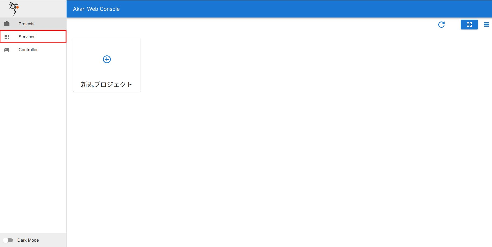

webコントローラを使ってみよう
解説動画
必要なサービスを立ち上げる
Servicesページを開く
左のページリストから、Servicesを選択し、開きます。
{kind=link}
AkariRpcServerを立ち上げる
もしAkariRpcServerが立ち上がっていなかったら、実行ボタンをクリックして立ち上げます。STATUSがRUNNINGに変わればOKです。初回実行時やアップデート配信時は、起動に時間がかかりますのでしばらくお待ちください
ヒント
{kind=link}
ControllerServerを立ち上げる。
ControllerServerの実行ボタンをクリックして立ち上げます。STATUSがRUNNINGに変わればOKです。初回実行時やアップデート配信時は、起動に時間がかかりますのでしばらくお待ちください
{kind=link}
webコントローラにアクセスする
左のページリストから、Controllerを選択し、開きます。
{kind=link}
機能の説明
webコントローラのページの見方と機能について説明します。
{kind=link}
Camera
{kind=link}
NONE
ストリーミングを停止します。
RGB
RGBカメラの画像をストリーミングします。
DEPTH
ステレオカメラによるDepthの画像をストリーミングします。
FACEDETECTION
顔認識の結果をオーバーレイしたRGB画像をストリーミングします。
OBJECTDETECTION
mobilenetによる物体認識の結果をオーバーレイしたRGB画像をストリーミングします。
Sensor input
{kind=link}
センサからの各入力値を表示します。
Button A-C
M5前面のボタンA-Cの値を表示します。ボタンを押すと値が1に変わります。din0, din1, ain0
ヘッドGPIOのdin0, din1, ain0の入力値を表示します。
Temperature
環境センサの取得した温度を表示します。単位は[℃]です。
Pressure
環境センサの取得した圧力を表示します。単位は[Pa]です。
Brightness
環境センサの取得した明るさを4096段階で出力します。値が小さいほど明るくなります。
Joint
{kind=link}
ヘッドのサーボ制御を行います。
Servoトグル
サーボのON、OFFを行います。ONにするとヘッドのサーボがロックされます。
ジョイステック
内側の円をドラッグして動かすことで、ヘッドの上下左右の向きを動かすことが出来ます。
速度設定スライダー&ボックス
サーボの目標速度をスライダーもしくはテキストボックスへの数値入力で変更することが出来ます。
加速度設定スライダー&ボックス
サーボの目標加速度をスライダーもしくはテキストボックスへの数値入力で変更することが出来ます。
Pan位置設定スライダー&ボックス
Pan(左右方向)のヘッドの目標位置をスライダーもしくはテキストボックスへの数値入力で指令することが出来ます。 またCurrent欄に現在位置を表示します。
Tilt位置設定スライダー&ボックス
Tilt(上下方向)のヘッドの目標位置をスライダーもしくはテキストボックスへの数値入力で指令することが出来ます。 またCurrent欄に現在位置を表示します。
SENDボタン
指定したヘッドの目標位置への移動を実行します。
CURRENTボタン
目標位置設定を現在位置にリセットします。
RESETボタン
サーボを初期位置に移動します。
Pinout
{kind=link}
ヘッドのGPIO出力を制御します。
dout0, dout1トグル
ヘッドのdout出力をON,OFFします。
pwmout0スライダー&ボックス
ヘッドのpwmout0出力の目標値を設定します。
SENDボタン
ヘッドのpwmout0出力の変更を実行します。
RESETボタン
dout0, dout1,pwmout0出力を初期化します。
Display
{kind=link}
ディスプレイの文字出力を制御します。
テキストボックス
表示する文字列を入力します。
FontColor, DisplayColorキャンバス
カラーキャンバスから、文字色及び背景色を選択できます。
FontSizeスライダー
表示する文字のサイズを指定できます。
SENDボタン
文字の表示を実行します。
RESETボタン
画面表示をリセットし、白一色に戻します。
サービスを使ってみよう へ進む
webコンソールを使ってみよう へ戻る